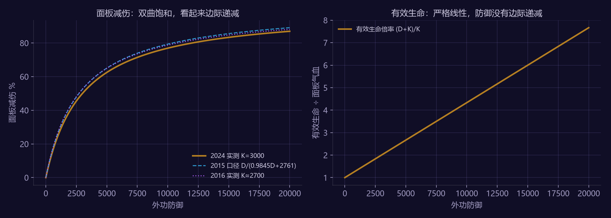
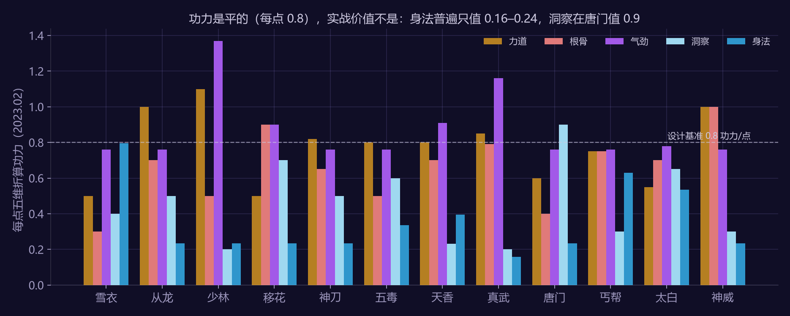
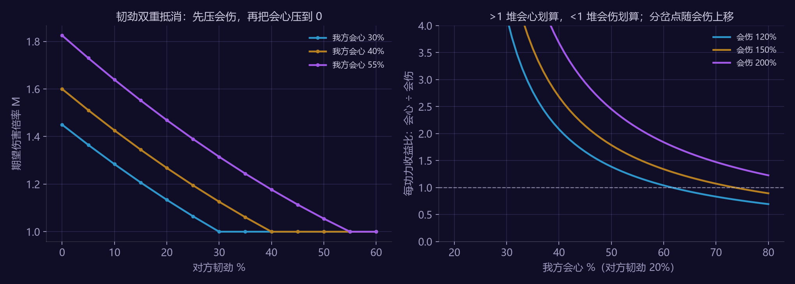
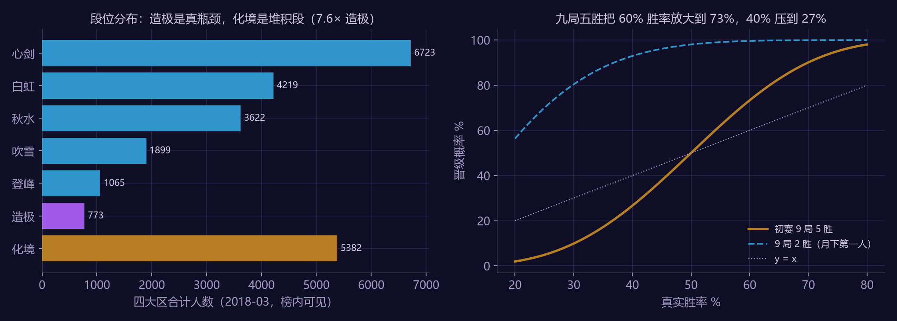

关于本拆解案的方法说明（请先读）
天刀端游 2015 年上线至今数值改过很多轮，公开资料里 2015、2016、2023、2024 四个年份的口径混在一起。本文的做法：
| 层 | 内容 | 可信度 |
|---|---|---|
| 数据层 | 防御减伤公式（2024 玩家实测，可把攻防调 0 的时光切磋环境；2015 / 2016 两组历史系数）、2023.02 十二门派五维加成表与功力 / 战力换算表（攻略站整理）、对抗属性规则（2016 官方公告、2023 官方百晓集）、论剑段位与赛制（2015–2024 官方） | 每条标年份；同一项多口径并列 |
| 推导层 | 有效生命的线性化、五维实际价值的重算与核对、韧劲双重抵消模型、段位堆积与晋级概率（§2–§5） | 我算出来的；关键结论各附"如果错了怎么看出来" |
| 对照层 | 作者本人 460 小时（唐门 / 天香 / 五毒）的属性堆叠体感 + 看数据前写下的五条直觉（§6） | 用来给模型找漏洞；个案不作群体结论 |
先说一条被数据推翻的前提：写案前我以为天刀的会心、韧劲和手游一样是"属性值 ÷ (属性值 + 等级分母)"的饱和曲线。查证后发现端游的命中 / 格挡 / 会心 / 会伤 / 韧劲在面板上本身就是百分比，五维按线性系数转成百分比，装备直接给"+X%"（2024 官方公告原话"提升 1% 的会心属性消耗必然会大于提升 1 点洞察属性"）。端游真正带饱和曲线的是防御减伤。这条错误直接决定了 §2 的选题。
术语：功力 = 官方的角色综合评分（偏 PVP 权重），战力 = 另一套评分（偏 PVE 权重），两套换算表 2023.02 版见 §3；"减伤"= 1 − 承伤比例；会伤按"额外伤害比例"计（基础 100% = 会心时 2 倍伤害）。
1. 选题说明
MMO 系统策划最常被问的三个问题：这个属性堆到多少就不划算了？官方给的功力评分和实战价值差在哪？对抗属性怎么定价才平衡？ 天刀把这三个问题摆在明面上：它同时公开了两套评分（功力 / 战力），玩家社区又实测出了减伤公式和对抗规则。本文用这些公开数据把三个问题各算一遍，最后落到论剑这个 PVP 场景看段位与赛制。
数据规模：12 门派 × 5 维的属性系数（60 格）、24 项属性的功力 / 战力权重、3 个年份的减伤公式、22 段位表、2018 年四大区心剑以上段位人数、2015 年官方 4000 万场论剑统计。
2. 防御减伤：面板递减是错觉，有效生命严格线性
2024 年一位玩家在可以把攻防调 0 的时光切磋环境里实测：外功承伤比例 = 3000 ÷ (外功防御 + 3000)，即减伤 R = D / (D + 3000)。2015 年多玩论坛口径 D / (0.9845 D + 2761)、2016 年另一组实测 K ≈ 2700，三个年份的分母只差 10%，可以认为这条曲线九年没大动。
| 外功防御 | 面板减伤 | 每 +100 防的边际减伤 | 有效生命倍率 |
|---|---|---|---|
| 1,000 | 25.0% | 1.88 个百分点 | 1.33× |
| 3,000 | 50.0% | 0.83 | 2.00× |
| 5,000 | 62.5% | 0.47 | 2.67× |
| 8,000 | 72.7% | 0.25 | 3.67× |
| 12,000 | 80.0% | 0.13 | 5.00× |
| 20,000 | 87.0% | 0.06 | 7.67× |

图 1：面板减伤（左）与有效生命倍率（右）- 面板减伤从 3,000 防的 50% 到 12,000 防的 80%，每 100 防的边际收益从 0.83 个百分点掉到 0.13，玩家会觉得"防御堆到后面没用了"。
- 但把它换算成有效生命 EHP = HP ÷ (1 − R) = HP × (D + K) / K，D 是线性项：每 1 点防御恒等于 HP / 3000 点气血，与当前防御是多少无关。 双曲减伤在有效生命口径下没有边际递减，这是这类公式的通性，天刀的 K = 3000 只是把斜率定在了 HP / 3000。
- 于是"1 点防御值多少气血"的答案取决于面板：HP 120,000 时 1 防 = 40 血；HP 60,000 时 1 防 = 20 血。而功力换算表把 1 外防定为 0.5 功力、1 气血 0.1 功力，即固定"1 防 = 5 血"——它按的是低血量、高防御的旧面板；对高血量角色，功力系统性低估了防御的实战价值。
| 面板气血 | 1 点防御的实战气血等价（D=3,000 / 6,000 / 12,000） | 功力口径 |
|---|---|---|
| 60,000 | 10.0 / 6.7 / 4.0 | 5 |
| 120,000 | 20.0 / 13.3 / 8.0 | 5 |
| 240,000 | 40.0 / 26.7 / 16.0 | 5 |
（表中气血与防御为示意区间，不是某个版本的实际面板；结论的方向不依赖具体取值。）
如果这条错了会怎么看出来：若减伤公式不是双曲型（例如线性封顶或分段），有效生命对防御就不会是直线；三个年份三组独立实测都拟合出同一族双曲线，线性化结论成立。
3. 五维的"功力"是平的，实战价值不是
官方设定每点五维 = 0.8 功力（2016 逍遥客栈原文），但五维给的是不同属性，属性再按功力换算表折算，每点五维的"实际功力"并不平。2023.02 有作者公布了十二门派的五维加成表和一张"五维实际功力收益表"。我用加成表 × 换算表重算了全部 60 格：

图 2：十二门派每点五维的实际功力（重算）| 门派 | 力道 | 根骨 | 气劲 | 洞察 | 身法 | 合计 |
|---|---|---|---|---|---|---|
| 唐门 | 0.60 | 0.40 | 0.76 | 0.90 | 0.235 | 2.895 |
| 天香 | 0.80 | 0.70 | 0.91 | 0.232 | 0.395 | 3.037 |
| 五毒 | 0.80 | 0.50 | 0.76 | 0.60 | 0.335 | 2.995 |
| 神威 | 1.00 | 1.00 | 0.76 | 0.30 | 0.235 | 3.295 |
| 少林 | 1.10 | 0.50 | 1.37 | 0.20 | 0.235 | 3.405 |
三个发现：
- 重算与公布表在 12 门派里 9 个完全一致，3 个门派 4 格对不上：雪衣洞察（算 0.40，表 0.70）、五毒洞察与身法（算 0.60 / 0.335，表 0.70 / 0.235）、真武力道（算 0.85，表 0.82）。五毒那两格正好差一个"0.1 外功"——加成表把它记在身法，收益表按它在洞察算的；哪张对要看实际面板。这说明同一作者的两张表互不自洽，用之前必须重算一遍。
- 身法在多数门派只值 0.16–0.24 功力（0.02% 格挡 + 0.015% 韧劲 = 0.1 + 0.135），是 0.8 基准的三成；洞察在唐门值 0.90（0.6 外功 + 命中 + 会心），是基准的 1.12 倍。功力把五维定成等价，是为了"堆什么五维功力都一样"的公平感；代价是同样 0.8 功力的身法与洞察，实战价值差 3.8 倍。对唐门这意味着：洗掉身法全堆洞察，功力不变、实战大涨。
- 功力与战力对同一属性的权重差揭示了两套评分的用途：韧劲 9 功力 / 0.3 战力（比 0.03）、会伤 4 功力 / 12 战力（比 3.0）、致命 4 功力 / 80 战力（比 20）。功力是 PVP 权重（韧劲值钱），战力是 PVE 权重（会伤和致命值钱、防御和气血几乎不值钱）。玩家问"该看功力还是战力"，答案是"看你打谁"。
如果这条错了会怎么看出来：若五维加成表转录有误，重算不可能 9/12 门派逐格吻合；若功力换算表有误，唐门洞察 0.9 这种整数级吻合不会出现。剩下 4 格的分歧是原作者两表的问题，不是本文的。
4. 韧劲的双重抵消：1% 韧劲 ≈ 1.1% 会心 ≈ 7.5% 会伤
天刀的会心对抗是减算：只有会心高于对方韧劲才有概率会心；同时每 1% 韧劲抵消 0.8% 会伤，会伤最低压到 50%（2016 官方公告，2023 百晓集重申）。韧劲同时压会心率和会伤，是"双重抵消"。写成期望伤害倍率：
M = 1 + max(c − t, 0) × max(CD − 0.8 t, 0.5) （c 会心率，CD 会伤，t 对方韧劲）
在"会心 40% / 会伤 150% / 对方韧劲 20%"的基准点：M = 1.268；+1% 会心 → +0.0134；+1% 会伤 → +0.0020；对方 +1% 韧劲 → −0.0149。

图 3：韧劲双重抵消（左）与会心 / 会伤每功力收益比（右）- 1% 韧劲的防御价值 ≈ 1.11% 会心 ≈ 7.5% 会伤。 功力换算表给韧劲 9、会心 10——两者比 0.9，与实战 1.11 同量级，说明官方给韧劲的定价是按"它能抵会心"来的。但功力给会伤 4，即 1% 会伤 = 0.4% 会心，实战上在基准点只有 0.15% 会心——功力把会伤高估了 2.7 倍。
- 韧劲的效果随对方会心变化：对方会心 40% 时，韧劲从 0 堆到 40% 把 M 从 1.60 压到 1.00，之后再堆没有任何收益（会心已经归零）。韧劲的目标值就是对手的会心率，多一分都是浪费。 这也解释了官方 2016 年给的 PVP 属性优先级"韧劲、气血、格挡、命中"——韧劲第一是因为它双重抵消，气血第二是因为 §2 的有效生命线性。
- 会心 vs 会伤的功力分岔点：对方韧劲 20% 时，会伤 150% 下要堆到会心 74% 才轮到会伤更划算；会伤 120% 时是 62%。普通玩家的会心远低于这个数，按功力性价比，会心永远优先于会伤。远程门派"命中先够、会心其次、会伤最后"的堆法在这里有了数字依据。
如果这条错了会怎么看出来：若会心不是减算而是独立乘算，韧劲曲线不会在 t = c 处折成水平线；2023 官方原话"只有会心高于对方韧劲时才有概率会心"排除了乘算。
5. 论剑：造极是真瓶颈，化境是堆积段
天刀论剑 22 个段位（一段到九段 → 试剑 … 造极 → 化境），2017 年起意剑及以下不掉段、化境以上不掉段。2018 年 3 月一位玩家统计了四个大区排行榜（前 10,000 名可见）心剑以上各段人数：
| 段位 | 心剑 | 白虹 | 秋水 | 吹雪 | 登峰 | 造极 | 化境 |
|---|---|---|---|---|---|---|---|
| 四大区合计 | 6,723 | 4,219 | 3,622 | 1,899 | 1,065 | 773 | 5,382 |

图 4：段位分布（左）与剑荡初赛晋级概率（右）- 心剑到造极是一个正常的金字塔（每升一段人数减少 25–45%），造极只有 773 人，是真正的瓶颈；但化境有 5,382 人，是造极的 7 倍——因为化境不掉段，赛季内所有打上过的人都堆在那里。2015 年热身赛季官方公布化境占 0.9%，到 2018 年榜内可见部分化境占 22.7%。"不掉段"让最高段位从稀缺标识变成了资历标识。
- 赛季节奏：S1 2015-09 到 S19 2024-11，19 个赛季 18 个间隔，平均 6.1 个月一季；赛季末剑荡八荒四天（初赛 9 局 5 胜 → 复赛 15 局取 64 强 → 淘汰赛）。
- 九局五胜的放大效应：真实胜率 60% 的玩家晋级概率 73%，40% 的 27%，50% 的正好 50%——它把胜率差放大 1.7 倍，同时让"运气一天"的方差被 9 局摊平。月下第一人的门槛是 9 局 2 胜，胜率 30% 的玩家也有 80% 过线，那是参与门槛不是筛选门槛。
- 2024-09 官方承认原切磋用的"功力天平"备受诟病，改为自定义能力模板（消耗能力点自配属性、命中 / 格挡 / 会心 / 韧劲阶梯定价）；2024-11 再拆成"常规属性段位战"和"自定义属性段位战（ELO 匹配）"，段位分共享。阶梯定价的各段阈值未公开，但方向与 §4 一致：四项对抗属性是零和的，必须用递增成本压住堆叠。
如果这条错了会怎么看出来：若化境不是堆积段，它的人数应少于造极；若九局五胜没有放大效应，晋级曲线应贴 y = x。
6. 对照：作者本人的 460 小时，和看数据前写下的直觉
6.1 个案对照
我玩天刀约 460 小时，主玩唐门 / 天香 / 五毒（远程或辅助），中度：每天 1–2 小时、日常全做加身份。属性上的体感有两条：
- 唐门"身法无用"是玩家共识，§3 给出了数字：身法每点 0.235 功力、洞察 0.90，差 3.8 倍；唐门定力只有 70 点，格挡近乎不生效，身法给的格挡更是白给。
- 论剑里最吃亏的不是攻击差，是韧劲差：对面韧劲压过我的会心后，输出直接掉回"无会心"，§4 的折线就是这个体感。
个案只说明模型的方向没错，不说明数值。
6.2 看数据前写下的直觉（analysis/data/tianya_priors.md，事后对照）
| 直觉 | 数据 | 结论 |
|---|---|---|
| 会心 / 韧劲是"属性值 ÷ (属性值 + 等级分母)"的饱和曲线，升版本后同面板会心率缩水 | 端游会心、韧劲本身是百分比，线性转化；饱和曲线只有防御减伤 | 错：把手游机制套到了端游 |
| 会心与韧劲直接相减；论剑堆韧劲性价比高于会心 | 减算成立；1% 韧劲 ≈ 1.11% 会心，且同时压会伤 | 对 |
| 远程门派会心堆到 40–50% 后换会伤 | 分岔点在 62–74%（对方韧劲 20%），比直觉高 | 半对：方向对，阈值低估 |
| 论剑不做属性标准化，装备差带入 | 段位战用真实属性；切磋 2024 起自定义属性模板 | 半对：分成了两条赛道 |
| 官方通过抬分母做通胀 | 减伤 K 九年基本不变（2700–3000）；通胀走的是等级上限与新属性（拆招 / 致命 / 灼魂） | 错 |
五条里错两条、半对两条。错的两条都是"把别的游戏的机制当成通性"——这类错误面试官口算就能戳穿，所以我把它留在正文。
7. 可以直接拿走的设计规则
- 双曲减伤没有边际递减，有的是"面板减伤递减"的观感。 想让防御后期不划算，要在 K 上做等级压制或给防御设上限，靠公式本身做不到。
- 综合评分要么按实战权重定，要么承认它是"公平感"指标。 天刀把五维定成等价 0.8 功力换来了公平感，代价是身法 / 洞察实战价值差 3.8 倍；两套评分（功力 / 战力）分别对准 PVP / PVE 是一个可借鉴的解法。
- 对抗属性的定价按"它能抵多少对方属性"来算。 韧劲 9 : 会心 10 与实战 1.11 : 1 吻合，会伤 4 与实战 0.15 不吻合——后者是应该修的。
- 双重抵消属性的目标值就是对手的对应属性，超过即浪费。 这决定了它必须有阶梯定价（天刀 2024 自定义模板正是这么做的）。
- 不掉段的最高段位会变成资历段。 想让顶段稀缺，要么允许掉段，要么在其上再设按排名的称号（天刀用武痴 / 武尊 / 武圣 / 求败补了这一层）。
8. 未做与可证伪之处
- 减伤公式来自玩家实测（2024，可调零环境），不是官方公布；三个年份口径一致是可信度的来源。
- 五维加成表与功力表来自攻略站整理（2023.02），4 格与原作者另一张表不一致，正文已列；实际面板验证需要登录游戏。
- §4 的基准点（会心 40% / 会伤 150% / 韧劲 20%）是示意值，分岔点随参数移动，正文给了三档会伤的结果。
- 段位分布是 2018 年榜内前 10,000 名的可见部分，不是全服分布；2015 官方 0.9% 与 2018 的 22.7% 口径不同，只作方向对照。
- 拆招 / 致命 / 耐受等"等级型"属性的等级→百分比表未公开，本文不覆盖等级压制。
9. 参考
- 天涯明月刀官网公告与百晓集（2016-06-23 公测平衡公告、2023 百晓集 PVP / PVE 属性篇、2024-09-26 与 2024-11-05 论剑改版公告）。
- 17173《PVP 硬核向：一文读懂天涯明月刀 OL 四项攻防关系》（2025-07 转载，2024 实测）；17173 2023-02-19 门派五维加成表与功力换算表；17173 2018-03-12 各大区论剑段位人数。
- 2015-09 官方论剑热身赛季数据页；2017-02 逍遥客栈论剑段位说明；2018-02 逍遥客栈功力分布。
- 全部数字由
analysis/tianya_attr_math.py产出，输出见analysis/data/output_ty_attr.txt；数据源逐条索引见analysis/data/tianya_sources.md。